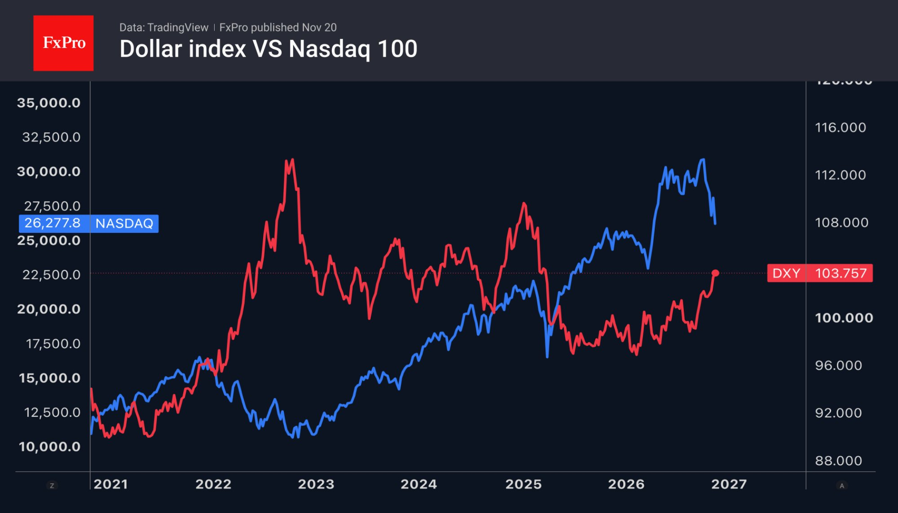
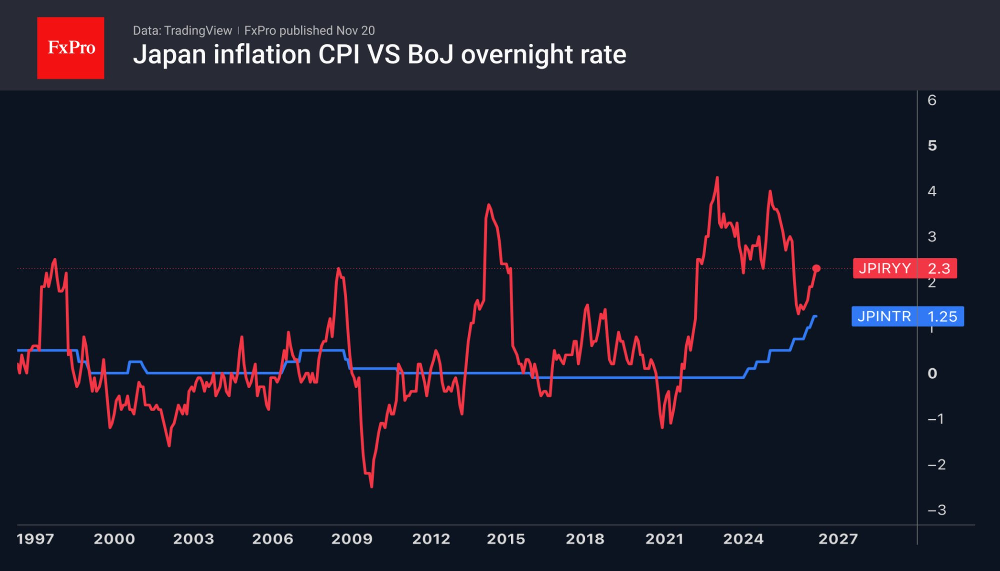

SEO
Meta Title: Yen gains on risk aversion as USDJPY retreats from 160
Meta Description: The yen gained 0.75% in 24 hours on risk aversion. In our view, a Nasdaq-100 correction and a hawkish BoJ are weighing on USDJPY.
The yen capitalised on the flight from risk
- The US dollar risks being hit by waning interest in AI and falling bond yields.
- Diminished risk appetite led to a decline in USDJPY to 158.8.
The US dollar is poised to close its fourth consecutive week in positive territory, despite a decline in Treasury yields as market participants reassess the outlook for the Fed's December rate decision. Just over a week ago, the probability of a 50-basis-point rate hike in December was approaching 15%, but by 10:30 GMT on Friday, it had dropped to zero. Moreover, futures now indicate a 2% chance that the rate will remain unchanged. In fact, these fluctuations in expectations do not alter the baseline scenario of a 25-basis-point hike on 9 December. Still, they clearly illustrate a shift in the short-term trend in response to the market turmoil of recent days, which has temporarily turned the dollar into a safe haven. Looking back a little further, the greenback was supported by an inflow of foreign capital into US stock markets.
Artificial intelligence technologies have contributed to the strengthening of the US dollar by boosting the economy and increasing foreign capital inflows. According to Treasury Department estimates, from January to September, non-residents injected $670 billion into US assets, 43% more than during the same period in 2025, the highest since at least 2016.
A correction in the Nasdaq-100 could hit the US dollar on several fronts at once. Non-residents will withdraw funds or hedge risks by selling US assets. A decline in the wealth effect will slow consumer spending, and market volatility threatens to deter companies from issuing stocks and bonds. The Fed may also reconsider its hawkish monetary policy stance for next year, although the December rate hike is unlikely to be taken off the table. Finally, the flight to safety will push down Treasury yields.
The yen could be the main beneficiary of these developments. It has strengthened by 0.75% over the past 24 hours, more than any other G10 currency, due to the narrowing of the spread between US and Japanese government bond yields and market deleveraging. The JPY has outperformed another safe-haven currency, the CHF, thanks to the Bank of Japan's focus on tightening monetary policy.
With the latest inflation data from Japan for October, Kazuo Ueda and his colleagues now have another argument for raising the overnight rate in the near future. Last month, consumer prices rose to 2.3% year-on-year, the highest level since November 2025. The futures market puts the odds of the BoJ tightening monetary policy in December at 85%, in line with the results of a Reuters survey. Markets have priced in 78 basis points of BoJ rate hikes by the end of 2027, compared with 67 basis points now priced in for the Fed (-20 points over the week and -8 points over the day). In the short term, this does not hurt the dollar against most currencies. Still, overall it is eroding the foundations beneath the dollar, which could crack in the coming weeks if the emerging reassessment of expectations continues.
A decline in global risk appetite, accelerating inflation and expectations of a BoJ rate hike have allowed USDJPY to pull back from the 160 level to 158.8 as of 10:30 GMT, which is dangerous in terms of potential intervention.
What to watch
Base case: in our view, the dollar is temporarily serving as a safe haven, gaining against most rivals but not against the yen, while further deleveraging is pushing USDJPY lower.
Risk: a shift in expectations towards further US policy tightening and USDJPY consolidating above 160.
Upcoming: PMI data on 23 November; US PCE and GDP on 25 November; the Fed decision on 9 December; and the Bank of Japan rate decision on 18 December. Check the economic calendar for more events.
The FxPro Analyst Team
Charts

Source: TradingView, as of 20 November 2026.
Alt text: Line chart from 2021 to November 2026: the Nasdaq-100 index (blue line, left scale) at 26,277.8 after pulling back from a peak near 30,000, and the US Dollar Index DXY (red line, right scale) at 103.757.

Source: TradingView, as of 20 November 2026.
Alt text: Line chart from 1997 to November 2026: Japan's annual CPI inflation (red line) at 2.3% and the Bank of Japan overnight rate (blue line) at 1.25%.
Links
- correction → "Crypto market retreats to $2.11T, following stocks", 20.11.2026 → https://fxpro.news/crypto/crypto-market-retreats-to-2-11t-following-stocks/
- Nasdaq-100 (instrument page) → https://fxpro.news/quotes/usndaq100/
- Kazuo Ueda → "Central banks are keeping a close eye on the Fed", 19.11.2026 → https://fxpro.news/market-overview/central-banks-are-keeping-a-close-eye-on-the-fed/
- USDJPY (instrument page) → https://fxpro.news/quotes/usdjpy/
- dangerous in terms of potential intervention → "Dollar hits 19-month high as USDJPY nears 160 and Japan hints at intervention", 12.11.2026 → https://fxpro.news/market-overview/dollar-hits-19-month-high-as-usdjpy-nears-160-and-japan-hints-at-intervention/
- Check the economic calendar for more events. → https://fxpro.news/economic-calendar/